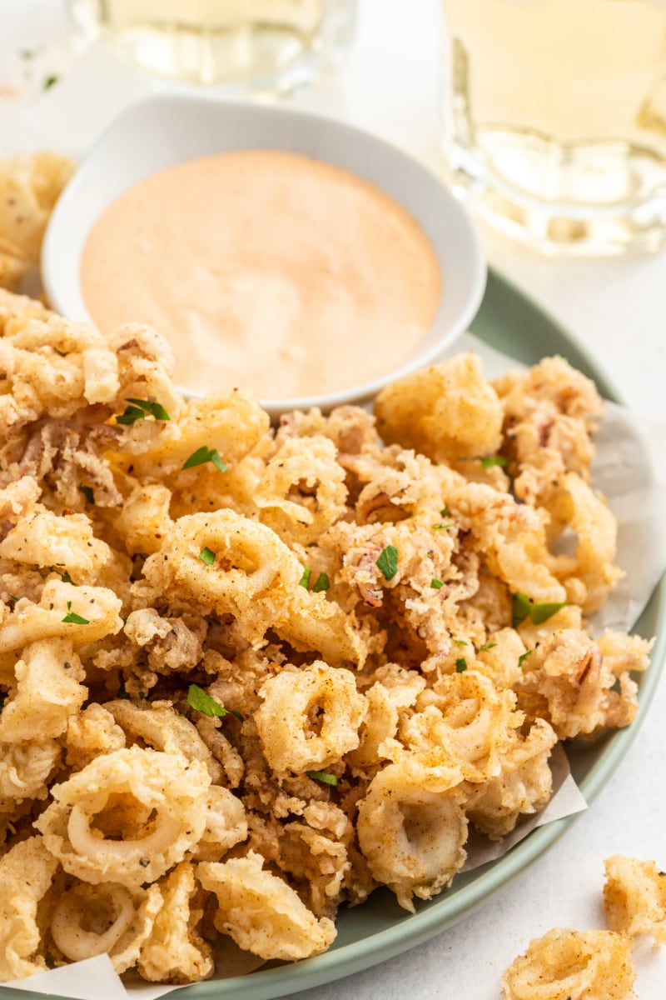

Calamari

Description
I love fried foods, especially fried calamari in particular.
In my own mind, one cannot go wrong with fried calamari since it can be paired with various sauces as well showing its duality.
The recipe below isn't hard at all for beginners as it includes common pantry staples and the recipe itself features only 5 steps.
Ingredients
- calamari
- flour
- oil
- buttermilk
- salt and pepper
- paprika
Steps
- In a bowl add the buttermilk and calamari, let it soak in the fridge for 1 hour.
- In another bowl, whisk the flour, salt, pepper, and paprika together. Remove the calamari from the buttermilk and dredge it into the flour mixture.
Shake off excess and separate the rings from the tentacles.
- Pour oil into a large pot until it reaches a depth of 2 inches then heat the oil until 365°F.
- Fry the calamari in batches for about a minute or until golden brown, then drain on paper towels.
- Enjoy and serve with sauce of choice.